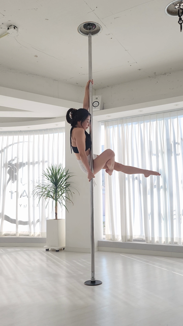
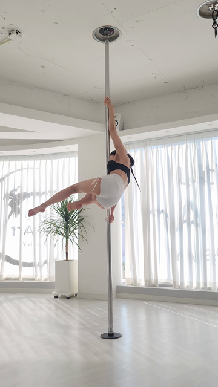
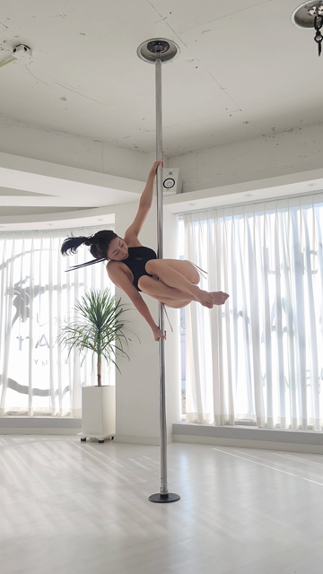

데이터 전부 실물: belle 분석 doc 071df9f894d64d1696f106e613f51f5c (파워스핀 잘못된예시, 51점)
+ 역립 실 doc(엘보 트위스트). 프레이밍 D는 이미 확정 — 여기서 다시 묻지 않아요.
3라운드 반영: ① 다리 글 ↔ doc record 전수 대조를 ⑤에 박제(의역·수치 오독 발견분 원문 교체) ·
② 어깨 쌍 양쪽에 같은 각도 표시 + "여기를 보세요" 한 줄 · ③ 참고 문구 통일(감점 아님·회전 힘 영향) ·
④ 최악 케이스 탭 = 검수용 명시 + 가림 해법 · ⑤ 멈춤 컷 = 두 다리 보이는 측정 순간으로 교체 + 다리 선 강조 ·
⑥ 일러스트 = 2안 시안 실물.
① 기본 화면 — 프레이밍 D 캡처 1장 (확정 반영, 재질문 아님)
2라운드 수정: 1라운드는 관절 단위 원 7개 — 항목은 3개(다리·어깨·참고)인데 동그라미가 7개라
혼란(belle 지적). → 마커를 항목 단위 그룹 3개로: 다리 = 엉덩이 2 + 무릎 2 를 묶는 그룹 1개,
어깨 = 그룹 1개, 참고(손) = 점선 1개. 채점이 짚은 관절 집합(doc faultJoints 여섯)은 그대로 —
표시만 항목으로 묶었어요. 그룹이나 아래 부위 버튼을 누르면 ② 상세로 이동해요.
분석 결과 화면 — 확대비교 자리카드 캐러셀 반복 → 캡처 1장으로. 기본 화면에 새 문장 0 (D-05).
9:41▪▪▪ ◔
‹분석 결과
자세 비교
파워스핀 · 기준 비교
읽는 법: 실선 그룹 = 감점 항목의 부위(다리 그룹 = 채점이 짚은 엉덩이·무릎 4관절을
한 테두리로, 어깨 그룹 = 어깨 2관절). 화면의 표시 수 = 항목 수 = 3. 점선 = 참고 —
점수 감점은 되지 않지만 회전·힘 같은 전체 동작에 영향을 줄 수 있는 부위예요.
그룹 경계는 doc keypointReport 실좌표의 항목별 관절 묶음이라 짝 없는 표시가 아니에요.
저신뢰 구간에서는 그룹이 자동 생략돼요 — ③ 최악 케이스에서 실물로 확인.
② 부위 탭 → 상세 — 확대 크롭 + 감점근거 글 + 일러스트 슬롯 (설계 질문 ①)
기본 화면에서 부위를 탭하면 열리는 상세예요. 3라운드 수정 2건:
(1) 어깨 — 다리 카드가 읽히는 이유(빨간 마킹이 결함을 그려줌)를 어깨에도 적용:
학생·기준 두 사진에 같은 각도 표시(팔 선 + 몸통 선 + 사이각 호)를 그리고,
사진 아래 "여기를 보세요" 한 줄을 붙였어요. 학생 쪽 = doc keypoint 실좌표, 기준 쪽 =
수동 배치(자동 좌표가 신뢰 게이트에 걸림 — 사유는 ⑤). 방향 일치 v40 프레임은 유지.
(2) 글 전수 대조 — 모든 블록의 글·수치를 doc record 원문·원값으로 맞췄어요
(2라운드 의역·수치 오독 발견분 교체, 대조 표는 ⑤).
부위 상세 시트다리 = 감점 2건 겹친 실제 케이스. 사진 마킹이 가리키는 결함(벌림)이 첫 블록,
무릎 신전은 둘째 블록 — 결함별로 나뉘고 수치는 각 블록 맨 뒤 작은 글씨.
9:41▪▪▪ ◔
‹자세 비교 — 부위 상세
belle 확인 포인트 (3라운드): (1) 어깨 — 양쪽에 같은 각이 그려지니
이제 두 사진이 "무엇을 견주는지" 읽히나요? (2) "여기를 보세요" 한 줄이 시선을 잡아주나요?
(3) 참고(손)는 상세 글 없이 사진만 — 점수 감점은 되지 않지만 회전·힘에 영향을 줄 수 있는
부위라 눈에 띈 차이만 보여드려요.
③ 최악 케이스 — 가림 · 거꾸로 · 모션블러 · 프레임 밖 · 좌표 결측 · 대응 실패
이 탭은 belle 검수용 장치예요 — 앱에 실리지 않아요.
설계가 최악 상황에서 무너지지 않는지 점검하는 자리(D-08)라 케이스를 한 화면에 모아뒀을 뿐,
실제 앱에서는 각 상황이 그때의 결과 화면 하나로만 보여요. (수강생이 이 나열을 볼 일은 없어요.)
좋은 케이스만으로 그린 목업은 무효(D-08). 아래 전부 실물 데이터 — 합성 0.
컷마다 "이 컷이 답하는 확인 질문"을 맨 위에 달았어요 — 질문에 "예"로 답해지는지 봐주시면 돼요.
④ 영상 위 표시 — 재생 중 → 음성 중(정지+부위 강조) → 재개
흐름(재생→멈춤+강조→재개)과 왼/오른 개인화 카피·펄스는 승인 — 유지. 3라운드 수정 2건:
(a) 멈춤 컷 교체 — 이전 컷(2.0s)은 엉덩이가 카메라를 향해 두 다리가 구분되지 않는
프레임이었어요(belle 지적). 음성 구간 안에서 두 다리가 실제로 보이는 프레임 = 감점을 잰
바로 그 순간(1.89s, u34)으로 교체 — 선택 근거·좌표 신뢰도는 ⑤.
(b) 강조 재설계 — 큰 원 1개는 덩어리로 보인다는 지적. 관절 원도 큰 원도 아닌,
다리 모양을 따라가는 얇은 선 2개(왼다리·오른다리, doc keypoint 실좌표)로 바꾸고
펄스는 유지했어요.
1 · 재생 중표시 최소 — 재생 바에 지적 순간 마커만.

▶재생 중
→
2 · 음성 중 — 정지 + 다리 선 강조멈춤 컷 = 감점을 잰 순간(1.89s) — 두 다리가 다 보여요.
음성이 읽는 두 다리를 다리 선 그대로 강조(펄스 유지).

왼다리는 폴을 따라 수직으로, 오른다리는 아래로 길게 눌러 한 줄로 뻗어보세요
❙❙음성 중 — 잠시 멈춤
→
3 · 재개음성이 끝나면 강조를 걷고 이어서 재생.

▶재개
④-b 음성 시점 일러스트 — 있는 버전 / 없는 버전 (belle 미결, 비교 후 결정)
같은 멈춤 컷 두 벌이에요. 오른쪽만 우상단에 동작 일러스트가 함께 떠요 — "폴을 따라 수직"을
말로만 듣는 것과 그림으로 보는 것의 차이를 비교해 주세요.
3라운드: B의 일러스트를 드로잉 placeholder 에서 32-08에서 belle 이 확정한 준실사 2안
시안 실물로 교체했어요. 단 이 시안의 동작은 파워스핀이 아니라 스타일 확인용 컷 —
power-spin 전용 컷은 A-7(33-14)에서 이 스타일로 생성해요.
A · 일러스트 없음 (현행)자막+다리 선 강조만.
왼다리는 폴을 따라 수직으로, 오른다리는 아래로 길게 눌러 한 줄로 뻗어보세요
❙❙음성 중 — 잠시 멈춤
B · 일러스트 동반음성이 읽는 동안 목표 자세 일러스트가 함께 —
스타일 실물(32-08 확정 2안), power-spin 컷은 A-7 생성.
스타일 실물 — 32-08 확정 2안 시안. power-spin 전용 컷은 A-7(33-14)에서 이 스타일로 생성
왼다리는 폴을 따라 수직으로, 오른다리는 아래로 길게 눌러 한 줄로 뻗어보세요
❙❙음성 중 — 잠시 멈춤
belle 확인 포인트 (3라운드): (1) 멈춤 컷에서 이제 왼다리/오른다리가
구분돼 읽히나요? (컷 = 감점을 잰 1.89s 순간, 이전 2.0s 컷은 엉덩이 방향이라 기각 — 근거는 ⑤)
(2) 다리 선 강조가 큰 원 1개보다 "어디를 말하는지" 잘 짚나요?
(3) 일러스트 A/B 중 어느 쪽인가요? (B = 32-08 확정 2안 스타일 실물)
재생 바의 마커 3개 = 감점 항목 3건의 순간 — 누르면 그 항목으로 이동하는 동작을 상정해요.
belle 질문: "벌림을 먼저 말하는 순서가 나 좋으라고 지어낸 것 아니냐."
답: 글의 내용은 전부 doc result.deductionBreakdown.records 실값이고, 순서만 화면 배치예요 —
doc 저장 순서는 r00(신전)→r01(벌림)인데, 카드 사진의 빨간 두 줄이 벌림각 렌더라서 사진이 가리키는
결함(벌림)을 첫 블록으로 올렸어요. 대조 중 2라운드 글의 의역 3곳·수치 오독 2곳을 발견해 원문·원값으로
교체했어요 (아래 표 — 숨기지 않음).
doc record (실값 인용)
화면 글 (3라운드)
대조
r01:split_angle — source="vision" · deviationSource="reference_relative" ·
statusLine="다리를 벌린 각도가 기준보다 좁아요" · whyLine="다리를 더 벌리지 못하면 스플릿 완성도에서
감점되는 부분이에요" · cueLine="양 무릎을 각각 반대쪽 벽으로 밀어낸다는 느낌으로 다리를 벌려보세요" ·
measuredValue=30.0(기준 대비 편차) · tolerance=20.0 · deviation=10.0 · points=−12.0
벌림 블록: 제목·why 뒷절·cue = 원문 그대로. why 앞에 "사진의 두 줄 사이가 좁을수록…" 연결 절 1개 추가
(사진→글 연결용 — 이 절만 doc 밖 문장). 수치 = "기준 대비 30° 좁음 → −12점"
일치 2R 오독 수정: "10° 좁음"(deviation 오독) → 30°(measuredValue = 기준 대비 편차,
fault_zoom.py 주석 근거)
r00:leg_extension — source="geometry" · deviationSource="ipsf_absolute" ·
statusLine="무릎이 기준보다 덜 펴져 있어요" · whyLine="다리 라인이 끝까지 뻗지 않으면 심사에서 신전
완성도로 감점되는 부분이에요" · cueLine="발끝으로 천장을 길게 밀어낸다는 느낌으로 다리를 쭉 뻗어보세요" ·
measuredValue=140.86 · baselineValue=180.0 · rawPoints=−23.0 · capApplied=true · points=−20.0
신전 블록: 제목·why·cue = 원문 그대로 (2R은 why·cue 를 의역했었음 → 3R 원문 복원).
수치 = "실측 141° · 기준 180° → −20점(상한 적용)"
일치 2R 의역 2곳 원문 교체
r02:angle_vs_reference__left_shoulder — source="geometry" · deviationSource="reference_relative" ·
statusLine="왼쪽 어깨(겨드랑이) 벌린 각도가 기준 자세와 차이가 있어요" · whyLine="어깨 벌린 각도가 기준에서
벗어나면 자세 정확도에서 감점되는 부분이에요" · cueLine="왼쪽 팔과 몸통 사이 각을 기준 자세에 나란히
겹쳐본다는 느낌으로 맞춰보세요" · measuredValue=34.49(기준 대비 편차) · deviation=14.49 · points=−17.4
어깨 블록: 제목·why·cue = 원문 그대로 (2R은 3곳 모두 의역했었음 → 3R 원문 복원).
수치 = "기준과 34° 차이 → −17.4점"
사진 마킹의 정체: 카드의 빨간 두 줄 = 벌림각(스플릿 사이각) 렌더 —
fault_zoom.py::_draw_leg_angle 가 골반→왼다리·골반→오른다리 두 선 + 사이각 호를 그리고,
게이트 has_split_angle_record 는 split_angle record 가 있을 때만 열려요. 크롭 우상단 배지
"30°" = doc 의 기준 대비 부족분 30 (visionVeto.faultJointDeficits.left_hip=30.0 /
r01.measuredValue=30.0 — 같은 vision 산출 계열). 즉 사진(벌림각 렌더)과 첫 블록(벌림 record)은
같은 record 를 가리켜요 — 순서는 이 연결의 표현이지 창작이 아니에요.
전부 conf≥0.5 게이트 통과 → 좌표 기반 자동 드로잉 (팔 선=어깨→팔꿈치, 몸통 선=어깨→엉덩이, 호=사이각)
기준 (v40 = ref kp80)
reference keypoint report — kp78~81 conf 0.20~0.46 전부 <0.5, kp80 은 어깨=손 좌표 동일(붕괴) +
기준 report 에 elbow 관절 자체가 없음
자동 드로잉 불가(신뢰 게이트 탈락) → 수동 배치 — v40 프레임 선택과 같은 지위(육안, 공개).
같은 선 두께·색·호 반경으로 학생 쪽과 동일 표기. 앱 자동화는 A-5 과제: 등면 구간 기준 좌표 확보(별도 신호)
전까지 이 카드의 기준 쪽 표시는 자동 생성 불가
④ 멈춤 컷 선택 기록 (3라운드 — 두 다리 가시 프레임)
후보 (음성 구간 kp32~38)
keypoint conf (다리 6관절)
판정
s018 (t=2.0s, kp36) — 2R 채택분
0.19~0.35 (전부 <0.5)
기각 — 엉덩이가 카메라를 향해 두 다리 구분 불가(belle 지적과 좌표 신뢰도가 같은 결론)
s016 (t=1.78s, kp32)
0.53~0.76
차순위 — 다리가 아직 접혀 스플릿 이전
s017 (t=1.89s, kp34)
0.68~0.82 (구간 최고)
채택 — 감점을 잰 바로 그 순간(doc u34) + 두 다리 육안 구분 가능(위 다리·아래 다리 모두 보임).
"안 가려진/보이는 프레임을 골라 보여준다"(③ 가림 해법)와 같은 원칙
다리 선 좌표 = kp34 실좌표: 왼다리 hip(0.505,0.475)→knee(0.335,0.488)→ankle(0.205,0.528),
오른다리 hip(0.518,0.518)→knee(0.425,0.510)→ankle(0.366,0.526) — 렌더 전 PIL 로 실제 프레임 위에 겹쳐
다리 위에 얹히는지 확인함. 왼/오른 지칭(자막)의 판정 근거는 아래 "④ 왼/오른 자동 판정" 행과 동일(kp34 무릎 y 비교)
방향 일치 프레임 탐색 기록 (2라운드 프로브 — 어깨 상세의 기준 프레임 교체 근거)
학생 v17 (u34 순간)구 정렬 v45 — 몸 앞면·웅크림채택 v40 — 등면·수평, 방향 일치
항목
기록
과제
1라운드 어깨 쌍은 시간 정렬만으로 골라(doc u34↔r90) 몸 방향이 어긋남 — belle 판정 "강등이 아니라 매칭시켜야".
회전 동작은 한 사이클 안에 모든 방향을 지나므로 정렬 순간 근처에 방향 일치 프레임이 존재할 수 있다는 가설을 실물로 검증
doc refFrameIdx 90(kp 18fps) = 추출 프레임 v45 (t≈4.5s) — 저장된 구 어깨 크롭의 기준 패널과 육안 일치로 확정
판정 기준
학생 v17 의 몸 방향(등-카메라, 몸 수평, 그립 팔 폴 따라 위로) 과 같은 방향 + 같은 팔 배치 — 육안
결과
존재함. 채택 = v40 (t≈4.0s, 정렬 순간에서 −0.5s, 같은 회전 사이클 내). 러너업 v39·v41 (같은 등면 반회전).
hold 구간 등면 후보 v70·v89 는 몸 기울기(수직 스플릿 자세)가 학생과 달라 차순위
정직성 한계
이 선택은 수동 육안이다. 2D keypoint 만의 자동 facing 판별은 정량 프로브에서 FAIL 확정(debug 종결분 —
부호 신호가 오답/정답 미구분). A-5(33-12) 자동화는 별도 신호(탐색창 확대 + 프레임 화소 대조 등)가 필요 — 구현 시 결정 항목
사전 자체 검열 (판정 기준 6개 — belle 도달 전 Claude 가 먼저 떨어뜨림)
안
판정
사유
D 기본 화면 (세로 패널 + 잡힌 관절 전부 마커)
생존 — 이 목업 ①
3초 짚기(마커) · 폴 대비 전신 라인 · 저신뢰 시 마커 생략 폴백 · 요소 수 감소
부위 탭 → 상세 (확대 크롭 + 글 + 일러스트 슬롯)
생존 — 이 목업 ②
탭한 부위만 확대 · 글이 "뭘 하라"를 채움 · 새 문장은 몸-방향 1줄뿐(어깨 상세)
B (마커 없는 패널) / C (전신 원본)
기각 — 미포함
B: 3초 안에 짚을 수 없음 · C: 인물이 작아짐 (framingexp belle 육안과 동일 결론)
반투명 겹침 · 슬라이더 와이프
기각 — 미포함
몸-방향(facing) 신호가 데이터에 없어 정합 보장 불가 — 겹치면 차이가 아니라 노이즈가 보임
유령 실루엣(이상 자세 스켈레톤) · 궤적선
기각 — 미포함
척추·발끝 없는 8관절 + 역립 환각 좌표로 그리면 "자신 있게 틀린 그림"이 됨 · 회전 궤적은 자기겹침
각도호(사이각 선)
조건부 유보 — 이 doc 미해당
벌림각 카드 한정 게이트 유지 — belle doc 의 벌림각 항목은 vision 산출이라 선을 그릴 좌표 근거가 없음
한계 명시 (숨기지 않음)
항목
내용
belle doc 크롭 = 2026-07-22 저장분
세 카드가 같은 순간(u34·r90)에서 잘린 구 렌더 — 같은-포즈 매칭·배지 제거는 그 뒤 반영돼 역립 실물(③)에서 확인 가능.
belle doc 재분석은 substrate 전환(flip) 후 일괄 — 이 목업은 "지금 저장된 실물"을 그대로 보여줌.
역립 좌우 라벨
역립 구간 좌우 귀속은 신뢰 강등(IN-01) — 상세 글이 "왼/오" 대신 "위 다리·훅 무릎"으로 지칭.
단 belle doc(파워스핀)은 비역립이라 ④의 왼/오른 개인화가 성립.
어깨 몸-방향 (2라운드 갱신)
1라운드 = 글로 흡수(belle A). 2라운드 belle 재판정("매칭시켜야") → 수동 프로브로
같은 회전 사이클 내 방향 일치 프레임 v40 을 찾아 쌍 교체 성공(위 탐색 기록). 자동화는 미해결 —
2D keypoint 자동 판별은 프로브 FAIL 확정이라 A-5 구현에서 별도 신호 필요.
어깨 각도 표시 (3라운드)
학생 쪽 = doc kp34 실좌표 자동. 기준 쪽 = 수동 배치 —
ref kp report 가 등면 구간에서 conf 0.20~0.46(게이트 미달)+elbow 미보유라 자동 드로잉 불가(위 좌표 근거 표).
수동 배치도 육안 검증(확대 열람)을 거쳤지만, 앱 자동화는 기준 등면 좌표 확보가 선행돼야 해요(A-5 결정 항목).
③ 가림 카드 사진 (3라운드)
확정 해법은 "안 가려진 프레임 캡처"(select_confident_frame 원칙의 크롭 앵커 적용)인데,
카드 사진은 아직 가려진 순간의 저장분 실물이에요 — 보이는-프레임 캡처의 실물 예시는 A-5 구현 후 재분석분에서 나와요.
(목업은 방향 확정용, 실물 렌더 아님을 명시)
④ 왼/오른 자동 판정
이 doc 실측: 음성 순간(kp34)의 무릎 y 비교 — 왼무릎이 오른무릎보다 높음
(conf≥0.5 인접 프레임 kp32·34·38 모두 동일 판정) + 프레임 육안으로 위로 뻗은 다리 = 왼다리 교차 확인.
목업 카피는 이 판정의 예시 — 앱 자동화는 A-5.
마커 위치
기본 화면 그룹 경계는 doc keypointReport 실좌표의 항목별 bounding. 단 이 목업의 그리기 자체는 앱 구현 전 제안 UI(오버레이).
확인 방법 기록 (3라운드): belle 에게 보내기 전 Claude 가 직접 확인한 것 —
(1) 어깨 쌍 마킹: 조립 후 두 패널을 각각 확대 열람해 선이 팔·몸통 위에 얹히는지 검증.
(2) ④ 다리 선: HTML 오버레이와 같은 좌표를 PIL 로 s017 실프레임에 겹쳐 렌더해 다리 위에 얹히는지 검증.
(3) 일러스트 실물(illust_variant2_pro.jpg)을 열어 32-08 확정 2안 시안인지 확인.
(4) 페이지 전체를 헤드리스 렌더해 탭 5개 스크린샷을 열람. 글 대조는 doc dump 원문(deductionBreakdown
records 전문)과 필드 단위로 대조했어요.